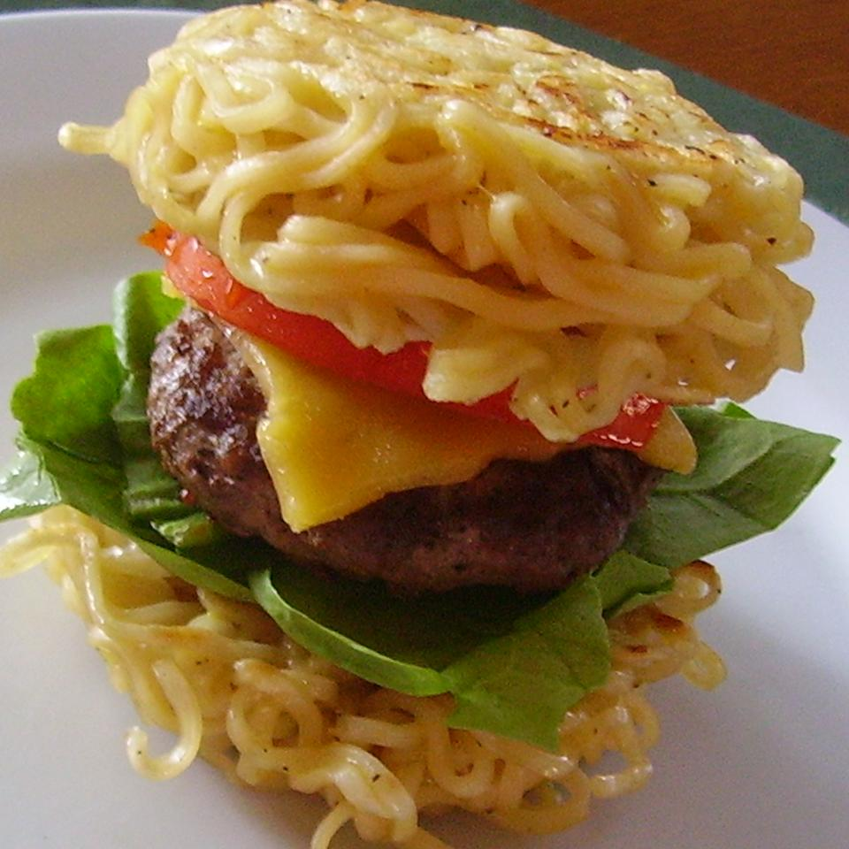

Ramen Burger

Description
Instant ramen becomes a nearly-instant burger bun in this fun, and tasty, spin on a traditional hamburger
seasoned with soy sauce and sesame oil.
Ingredients
- 2 (3 ounces) packages instant ramen noodles, flavor packet discarded
- 2 large eggs
- salt and ground black pepper to taste
- 3/4 pound lean ground beef
- 1 tablespoon soy sauce
- 1 teaspoon sesame oil
- 3 tablespoons vegetable oil, divided
- 3 slices American cheese
- 1/4 cup ketchup
- 2 tablespoons chile-garlic sauce (such as Sriracha)
- 1 1/2 cups arugula
- 3 large eggs
Steps
- Bring a pot of water to a boil; add ramen noodles. Boil, stirring occasionally, until noodles are tender,
about 3 minutes. Drain. Allow noodles to cool slightly.
- Beat 2 eggs in a bowl; season with salt and pepper. Stir noodles into eggs until evenly coated. Divide
noodles into 6 burger-size ramekins or bowls. Place a sheet of plastic wrap directly over noodles and stack
another bowl on top to flatten noodles. Refrigerate until firm, about 20 minutes.
- Mix beef, soy sauce, and sesame oil in a bowl. Divide beef mixture into three equal portions and shape into
patties.
- Heat about 1 tablespoon vegetable oil in a large skillet over medium-high heat. Invert each ramen bowl,
gently tapping the bottom of the bowl until ramen loosens, careful to maintain bun shape.
- Fry each ramen bun, without moving noodles, in hot oil until golden brown, about 3 minutes. Flip each bun
and continue frying until crisp, 3 to 5 minutes more. Ramen bun should be crispy on one side and slightly
softer on the other. Transfer buns to large plate with the crispy side up.
- Heat about 1 tablespoon vegetable oil in the same skillet used to fry ramen over medium heat. Cook beef
patties until burgers are lightly pink in the center, 3 to 5 minute per side. An instant-read thermometer
inserted into the center should read 140 degrees F (60 degrees C). Arrange a slice of American cheese over
each burger and continue to cook until melted, about 1 minute more.
- Mix ketchup and chile-garlic sauce in a small bowl; spread mixture over the crispy side of each ramen bun.
Divide arugula over 3 ramen buns. Place burgers over arugula.
- Heat about 1 teaspoon oil in a small skillet over medium-high heat; fry remaining eggs one at a time, adding
more oil as needed, until yolk is almost firm, about 1 minutes per side. Place egg over patty and top with
remaining bun.